import numpy as np
import seaborn as sns
import matplotlib.pyplot as plt
import pandas as pd
from os import mkdir, path
import statsmodels.formula.api as smf
from matplotlib import rc
from sklearn.linear_model import LinearRegression, SGDRegressor
from sklearn.model_selection import GridSearchCV
from sklearn.preprocessing import PolynomialFeatures
from sklearn.pipeline import make_pipeline
from scipy.interpolate import UnivariateSplineMDI 720 : Statistiques
Generalization
Joseph Salmon
This notebook reproduces the pictures for the course “Generalization_fr”
dirname = "../prebuiltimages/"
if not path.exists(dirname):
mkdir(dirname)
np.random.seed(seed=44)
###############################################################################
# Plot initialization
plt.close('all')
dirname = "../srcimages/"
imageformat = '.pdf'
rc('font', **{'family': 'sans-serif', 'sans-serif': ['Computer Modern Roman']})
params = {'axes.labelsize': 12,
'font.size': 16,
'legend.fontsize': 16,
'text.usetex': True,
'figure.figsize': (8, 6)}
plt.rcParams.update(params)
sns.set_context("poster")
sns.set_palette("colorblind")
sns.set_style("white")
sns.axes_style()
###############################################################################
# display function:
saving = False
def my_saving_display(fig, dirname, filename, imageformat):
""""Saving with personal function."""
filename = filename.replace('.', 'pt') # remove "." to avoid floats issues
if saving is True:
dirname + filename + imageformat
image_name = dirname + filename + imageformat
fig.savefig(image_name)###############################################################################
# Motivating example
np.random.seed(seed=42)
n_samples = 60
sigma = 0.2 # noise level
x = np.sort(3. * np.random.rand(n_samples))
xx = np.linspace(-.2, 3.2, 200)
def f(x):
return np.sin(x ** 2) + 2. + x
y = f(x)
y += sigma * np.random.randn(n_samples)
# Ploting Signal / Noise
fig = plt.figure(figsize=(8, 6))
plt.xlabel('$x$')
plt.ylabel('$f(x)$')
plt.ylim([1.5, 7])
plt.xlim([-.5, 3.5])
plt.plot(xx, f(xx), '--k', label="true signal")
plt.legend(loc='upper left')
plt.tight_layout()
plt.show()
my_saving_display(fig, dirname, "sin_signal", imageformat)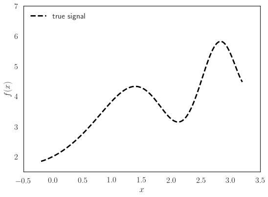
plt.plot(x, y, 'o', label="noisy observations")
my_saving_display(fig, dirname, "sin_signal_noisy", imageformat)# Performing OLS
X = x[:, np.newaxis]
ols = LinearRegression(fit_intercept=True)
y_pred = ols.fit(X, y).predict(X)
# Plotting Signal / OLS
fig = plt.figure(figsize=(8, 6))
plt.plot(x, y, 'o', label="noisy observations")
plt.plot(X, y_pred, '-k', label="linear prediction")
plt.xlabel('$x$')
plt.ylabel('$f(x)$')
plt.ylim([1.5, 7])
plt.xlim([-.5, 3.5])
plt.legend(loc='upper left')
plt.tight_layout()
plt.show()
my_saving_display(fig, dirname, "sin_signal_OLS", imageformat)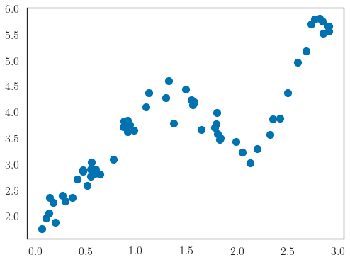
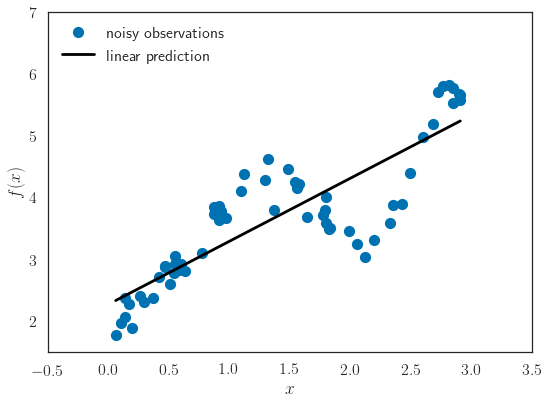
# Signal / Polynomial Regression
degrees = [2, 3, 4, 5, 6]
colors = [2, 3, 4, 5, 7] # yellow was ugly!
for i, degree in enumerate(degrees):
X_poly = np.vander(x, degree + 1, increasing=True) # or with np.vander
# Is equivalent to:
# X_poly = np.column_stack([x ** i for i in range(degree + 1)])
ols = LinearRegression(fit_intercept=False) # intercept already included!
ols.fit(X_poly, y)
y_pred = ols.predict(np.vander(xx, degree + 1, increasing=True))
print("OLS coef")
print(ols.coef_) # not the small coef on dim 2
# Signal / OLS
fig = plt.figure(figsize=(8, 6))
# plt.plot(xx, f(xx), 'k', label="true signal")
plt.plot(x, y, 'o', label="noisy observations")
plt.plot(xx, y_pred, '-',
color=sns.color_palette("colorblind", 8)[colors[i] - 2],
label=r"Polynomial prediction (deg={0})".format(degree))
plt.xlabel('$x$')
plt.ylabel('$f(x)$')
plt.ylim([1.5, 7])
plt.xlim([-.5, 3.5])
plt.legend(loc='upper left')
plt.tight_layout()
plt.show()
my_saving_display(fig, dirname, "sin_signal_poly" + str(degree),
imageformat)OLS coef
[ 2.27933767 0.99365503 0.00876502]
OLS coef
[ 1.10274056 5.6748322 -3.89572378 0.86254439]
OLS coef
[ 1.71887066 1.73868943 2.15892084 -2.36048027 0.547988 ]
OLS coef
[ 2.5100627 -5.37269089 18.55515212 -16.95726575 6.05346875
-0.73952439]
OLS coef
[ 1.38595334 7.60140718 -22.5723281 37.28881048 -27.95762535
9.32354027 -1.13036548]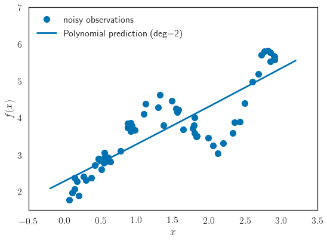
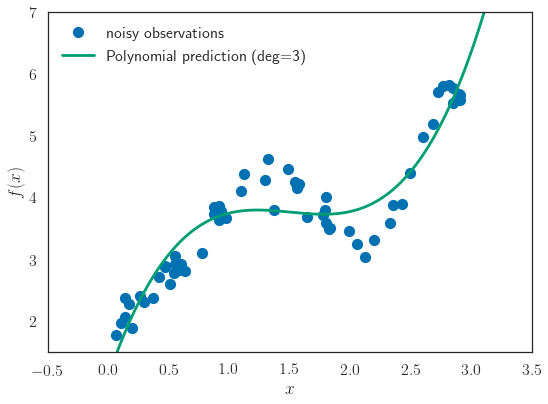
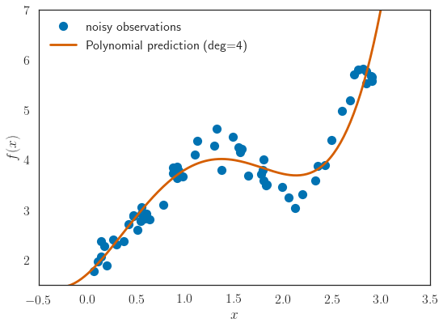
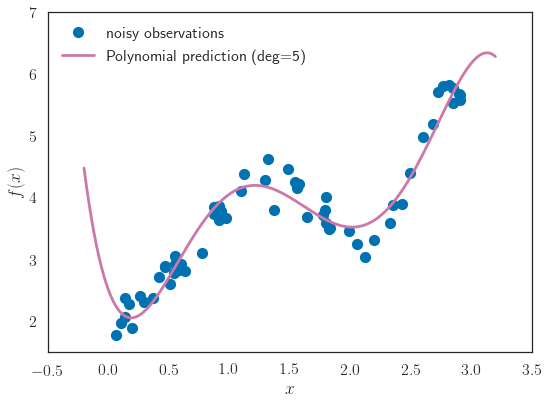
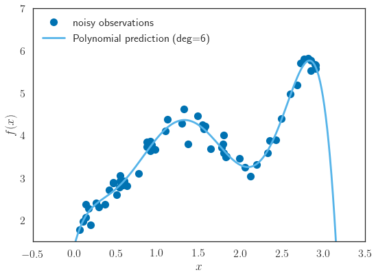
degrees = [3, 4, 5, 6]
colors = [3, 4, 5, 7] # yellow was ugly!
fig = plt.figure(figsize=(8, 6))
plt.plot(x, y, 'o', label="noisy observations")
for i, degree in enumerate(degrees):
X_poly = np.vander(x, degree + 1, increasing=True) # or with np.vander
# Is equivalent to:
# X_poly = np.column_stack([x ** i for i in range(degree + 1)])
ols = LinearRegression(fit_intercept=False) # intercept already included!
ols.fit(X_poly, y)
y_pred = ols.predict(np.vander(xx, degree + 1, increasing=True))
# Signal / OLS
# plt.plot(xx, f(xx), 'k', label="true signal")
plt.plot(xx, y_pred, '-',
color=sns.color_palette("colorblind", 8)[colors[i] - 2],
label=r"Polynomial prediction (deg={0})".format(degree))
plt.xlabel('$x$')
plt.ylabel('$f(x)$')
plt.ylim([1.5, 7])
plt.xlim([-.5, 3.5])
plt.legend(loc='upper left')
plt.tight_layout()
plt.show()
my_saving_display(fig, dirname, "sin_signal_poly_all", imageformat)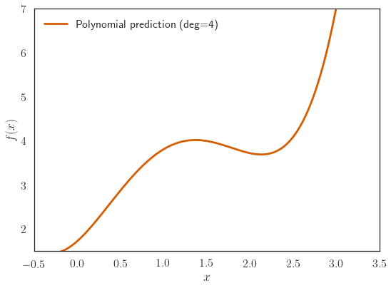
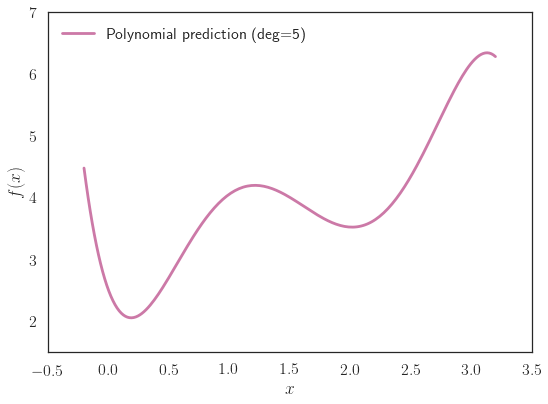
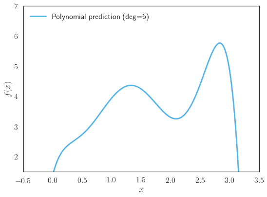
# defining a class for Polynonial Regression
class PolynomialRegression(LinearRegression):
"""PolynomialRegression Class, to perform for instance CV"""
def __init__(self, degree=2):
super(PolynomialRegression, self).__init__()
self.degree = degree
self.fit_intercept = False
def fit(self, X, y, deg=None):
X = np.vander(X, N=self.degree + 1)
super(PolynomialRegression, self).fit(X, y)
return self
def predict(self, X):
X = np.vander(X, N=self.degree + 1)
return super(PolynomialRegression, self).predict(X)
model = PolynomialRegression(degree=3)
# On the importance of cross-validation
estimator = PolynomialRegression()
degrees = np.arange(2, 12)
cv_model = GridSearchCV(estimator, cv=5,
param_grid={'degree': degrees},
scoring='neg_mean_squared_error')
# Note: in scoring above, neg means -MSE
cv_model.fit(x, y)
mse = [-cv_score for cv_score in cv_model.cv_results_['mean_test_score']]
fig = plt.figure(figsize=(8, 6))
plt.semilogy(degrees, mse, label="CV MSE curve")
plt.xlabel('Degree')
plt.ylabel('CV MSE')
plt.legend(loc='upper left')
plt.tight_layout()
plt.show()
my_saving_display(fig, dirname, "CV_curve", imageformat)
best_idx = np.argmax(cv_model.cv_results_['mean_test_score'])
best_deg = degrees[best_idx]
best_mse = -cv_model.cv_results_['mean_test_score'][best_idx]
plt.plot(best_deg, best_mse, "*r", markersize=40, label="Best degree (CV MSE)")
plt.legend(loc="upper left")
plt.tight_layout()
plt.show()
my_saving_display(fig, dirname, "CV_curve_and_best", imageformat)
# alternatively, onec can do it directly with sklearn:
model = make_pipeline(PolynomialFeatures(degree=6), LinearRegression())
y_pred = model.fit(x[:, np.newaxis], y).predict(xx[:, np.newaxis])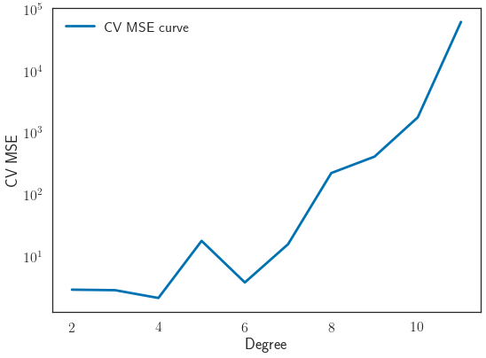
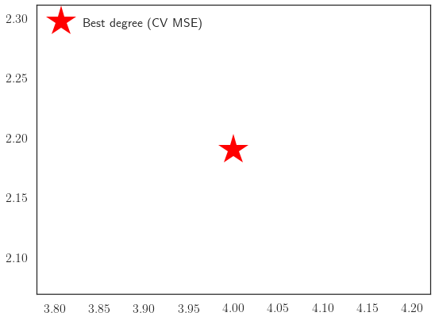
###############################################################################
# SPLINE PART : Beware sicpy needs the points to be in ascending order!!!# Follow guidelines from:
# http://danielhnyk.cz/creating-your-own-estimator-scikit-learn/
# for creating an sklearn compatible class
class UnivariateSplineSmoother(LinearRegression):
def __init__(self, s=4.):
self.s = s
def fit(self, x, y):
self._spline = UnivariateSpline(x, y, s=self.s)
return self
def predict(self, x):
return self._spline(x)
# large curvature means s is small
spline_smoother = UnivariateSplineSmoother(0.5).fit(x, y)
y_pred = spline_smoother.predict(xx)
# low curvature means s is large
spline_smoother = UnivariateSplineSmoother(2.).fit(x, y)
y_pred_bis = spline_smoother.predict(xx)
# Plotting Splines
fig = plt.figure(figsize=(8, 6))
plt.plot(x, y, 'o', label="noisy observations")
plt.plot(xx, y_pred, '-', label="Spline: large curvature")
plt.plot(xx, y_pred_bis, '-', label="Spline: low curvature")
plt.xlabel('$x$')
plt.ylabel('$f(x)$')
plt.ylim([1.5, 7])
plt.xlim([-.5, 3.5])
plt.legend(loc='upper left')
plt.tight_layout()
plt.show()
my_saving_display(fig, dirname, "splines", imageformat)
estimator = UnivariateSplineSmoother()
s_values = np.linspace(0.1, 10, num=20)
cv_model_spl = GridSearchCV(estimator, cv=5,
param_grid={'s': s_values},
scoring='neg_mean_squared_error')
# Note: in scoring above, neg means -MSE
cv_model_spl.fit(x, y)
mse_spl = [-cv_score for cv_score in cv_model_spl.cv_results_['mean_test_score']]
fig = plt.figure(figsize=(8, 6))
plt.semilogy(s_values, mse_spl, label="CV MSE curve")
plt.xlabel('s values')
plt.ylabel('CV MSE Splines')
plt.legend()
plt.tight_layout()
plt.show()
my_saving_display(fig, dirname, "CV_curve_spline", imageformat)
best_idx_spline = np.argmax(cv_model_spl.cv_results_['mean_test_score'])
best_s_spline = s_values[best_idx_spline]
best_mse_spline = -cv_model_spl.cv_results_['mean_test_score'][best_idx_spline]
plt.plot(best_s_spline, best_mse_spline, "*r", markersize=40,
label="Best s value (CV MSE)")
plt.legend()
plt.tight_layout()
plt.show()
my_saving_display(fig, dirname, "CV_curve_and_best_spline", imageformat)
# large curvature means s is large
y_pred_bis = cv_model_spl.predict(xx)
# Plotting Splines
fig = plt.figure(figsize=(8, 6))
plt.plot(x, y, 'o', label="noisy observations")
plt.plot(xx, y_pred, '-', label="Spline: CV choice")
plt.xlabel('$x$')
plt.ylabel('$f(x)$')
plt.ylim([1.5, 7])
plt.xlim([-.5, 3.5])
plt.legend(loc='upper left')
plt.tight_layout()
plt.show()
my_saving_display(fig, dirname, "best_spline_display", imageformat)
print("MSE Polynomials = {0})".format(best_mse))
print("MSE Spline = {0})".format(best_mse_spline))
###############################################################################
# GAM PART :
class GeneralizedAdditiveRegressor(LinearRegression):
"""Fit Generalized Additive Model with backfitting"""
def __init__(self, smoothers, max_iter=20):
self.smoothers = smoothers
self.max_iter = max_iter
def fit(self, X, y):
n_samples, n_features = X.shape
self.y_mean_ = np.mean(y)
residuals = y.copy()
residuals -= self.y_mean_
for i in range(self.max_iter):
for j in range(n_features):
if i > 0:
residuals += self.smoothers[j].predict(X[:, j])
self.smoothers[j].fit(X[:, j], residuals)
residuals -= self.smoothers[j].predict(X[:, j])
return self
def predict(self, X):
n_samples, n_features = X.shape
y = np.ones(n_samples) * self.y_mean_
for j in range(n_features):
y += self.smoothers[j].predict(X[:, j])
return y
def f1(x):
return np.cos(3 * x)
def f2(x):
return x ** 3
def f3(x):
return 3 * np.log(1 + np.abs(x))
def f_true(X):
return f1(X[:, 0]) + f2(X[:, 1]) + f3(X[:, 2])
n_samples = 100
x1 = np.sort(2. * np.random.rand(n_samples) - 1.)
x2 = np.sort(2. * np.random.rand(n_samples) - 1.)
x3 = np.sort(2. * np.random.rand(n_samples) - 1.)
X = np.c_[x1, x2, x3]
y = f_true(X)
y += 0.1 * np.random.randn(n_samples)
s1 = 10 * np.var(y)
s2 = 10 * np.var(y)
s3 = 10 * np.var(y)
smoothers = [UnivariateSplineSmoother(s=s1), UnivariateSplineSmoother(s=s2),
UnivariateSplineSmoother(s=s3)]
gam = GeneralizedAdditiveRegressor(smoothers, max_iter=200)
gam.fit(X, y)
y_pred = gam.predict(X)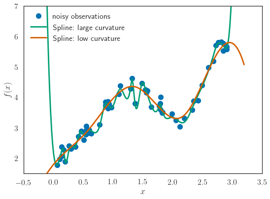
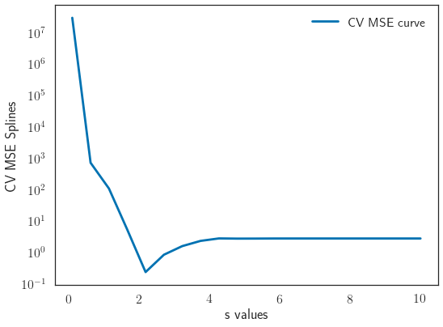
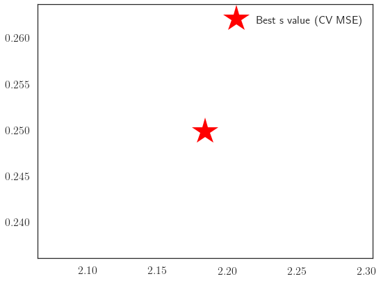
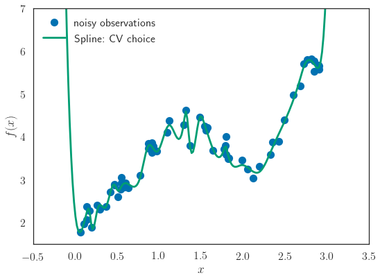
MSE Polynomials = 2.1899671188674597)
MSE Spline = 0.24984386133649528)xx = np.linspace(-1, 1, 100)
fig, axes = plt.subplots(nrows=1, ncols=3, figsize=(12, 5),
sharex=True, sharey=True)
for j, (smoother, ax, f) in enumerate(zip(smoothers, axes.flat, [f1, f2, f3])):
f_j = smoother.predict(xx)
ax.plot(xx, f(xx) - np.mean(f(xx)), "--", label="true")
ax.set_title("$x_{0}$".format(j + 1))
plt.ylim([-1.5, 1.5])
plt.xlim([-1., 1])
plt.tight_layout()
plt.legend(loc="upper left")
plt.show()
my_saving_display(fig, dirname, "GAM-true", imageformat)
fig, axes = plt.subplots(nrows=1, ncols=3, figsize=(12, 5),
sharex=True, sharey=True)
for j, (smoother, ax, f) in enumerate(zip(smoothers, axes.flat, [f1, f2, f3])):
f_j = smoother.predict(xx)
ax.plot(xx, f(xx) - np.mean(f(xx)), "--", label="true")
ax.plot(xx, f_j - np.mean(f_j), label="prediction")
plt.ylim([-1.5, 1.5])
plt.xlim([-1., 1])
ax.set_title("$x_{0}$".format(j + 1))
plt.tight_layout()
plt.legend(loc="upper left")
plt.show()
my_saving_display(fig, dirname, "GAM-true-predict", imageformat)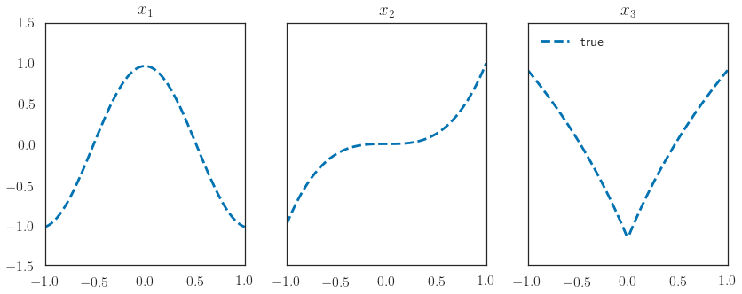
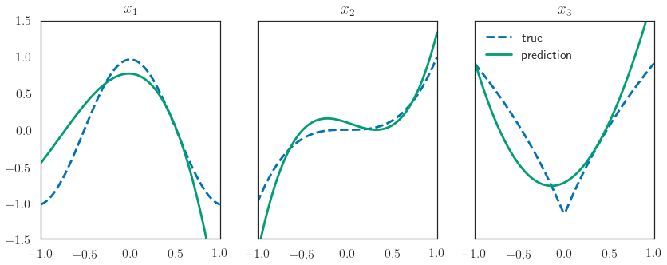
###############################################################################
# Robustness PART :np.random.seed(seed=42)
n_samples = 60
sigma = 0.2 # noise level
x = np.sort(3. * np.random.rand(n_samples))
xx = np.linspace(-.2, 3.2, 200)
y = 3 * x
espilon = 5 * np.random.randn(n_samples)
espilon[1] = 70
espilon[2] = 50
espilon[3] = 45
espilon[5] = 48
y += espilon
# Performing OLS
X = x[:, np.newaxis]
ols = LinearRegression(fit_intercept=True)
y_pred = ols.fit(X, y).predict(X)d = {'temp': x, 'dens': y}
df = pd.DataFrame(data=d)
mod = smf.quantreg('dens ~ temp', df)
res = mod.fit(q=.5)
# Plotting Signal / OLS
fig = plt.figure(figsize=(8, 6))
plt.plot(X, 3 * X, '--k', label="true")
plt.plot(X, y, 'o', label="noisy observations")
plt.plot(X, y_pred, '-', label="linear prediction")
plt.xlabel('$x$')
plt.ylabel('$f(x)$')
plt.xlim([0, 3])
plt.legend(loc='upper right')
plt.tight_layout()
my_saving_display(fig, dirname, "robust_ols", imageformat)
plt.plot(x, res.predict({'temp': x}), linestyle='-',
label='LAD statsmodel', zorder=2)
plt.xlim([0, 3])
plt.legend(loc='upper right')
plt.tight_layout()
plt.show()
my_saving_display(fig, dirname, "robust_lad", imageformat)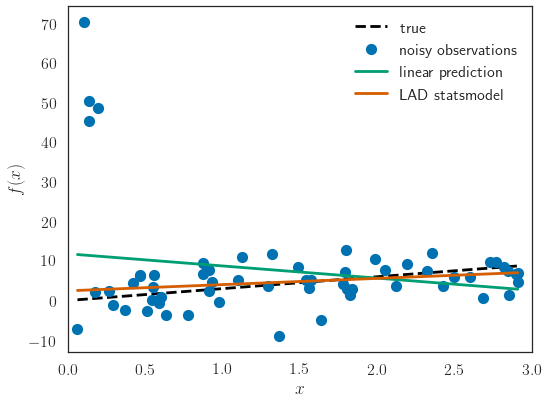